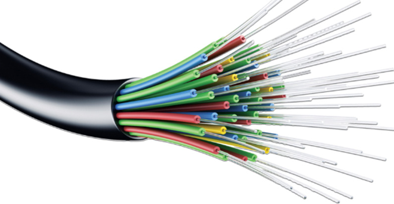

for Secondary Schools
Fibre optic connection
Fibre optic cable uses light signals transmitted through thin strands of glass or plastic (optical fibres) to deliver high-speed Internet. It offers significantly faster speeds and more reliable connections than traditional
copper wire-based Internet. For example,
fiber optic cables are widely used in cities
and businesses to deliver fast and reliable
Internet for streaming, video calls, and
transferring large files. Figure 1.14
illustrates a fibre optic cable.


Figure 1.14: Fibre optic cable


Internet Service Provider

Internet services are usually provided

by companies specialised in the

communication
business.


These

companies are known as Internet Service


Providers (ISPs). An ISP offers Internet


access and other related services to its

customers.

Basic requirements for accessing the

Internet

There are different ways to connect to the


Internet, and these methods are not the

same as how computers connect within

a small local network. Some Internet


connections like Digital Subscriber Line

(DSL), cable, and fibre are fixed and offer

fast Internet at home or work. Others like


WiMAX allow you to connect while

moving. In places where fast Internet is not available, people may still use older methods like satellite connections, dial- up, or basic mobile data.
To connect a computer at home or work to the Internet, you usually need:
(a) A computer or mobile device
(b) A modem/router (this may use a
telephone line or work wirelessly)
(c) An Internet Service Provider
(ISP) to give you access
(d) Software, like a web browser and email program, to go online and communicate.
Modem
A modem is a communication or network
device that performs two key processes,
namely modulation and demodulation.
Through the modulation process, the modem converts digital signals to
analogue signals for transporting over a
transmission media. By demodulation,
the modem converts analogue signals to digital signals. The term modem is
a blended word formed by two words,
modulation (Mo) and demodulation
(Dem). In a computer, information is stored in digital form. However, information
is
transmitted
over
transmission media as analogue waves.
The modem, such as shown in Figure
1.15, is an important network device
that allows computers to receive and send
information over transmission media.